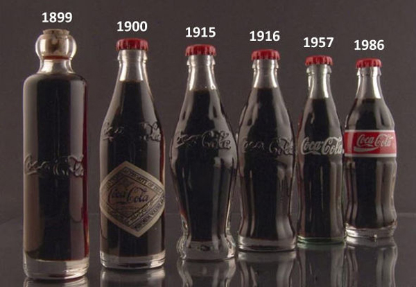

A Coca-Cola foi criada pelo farmacêutico John Pemberton, em maio de 1886, em Atlanta, nos Estados Unidos. Originalmente, a receita deveria servir como um remédio para o estômago, um mal estar comum entre os estadunidenses da época.
A fórmula original era uma mistura de folhas de coca, extrato de noz de cola, óleo de noz moscada, óleo de limão, óleos de lima, coentro e muito açúcar, além de alguns outros óleos essenciais, compondo os ingredientes que depois ficaram conhecidos como sabor 7X.
Após a morte de John Pemberton, a história da Coca-Cola tem uma reviravolta.
Frank Robinson, o contador do falecido farmacêutico, vendeu a fórmula do tônico por U$2,3 mil para Asa Griggs Candler, o homem que transformou a bebida em um ícone de consumo.
Entre seus primeiros passos, Candler criou a patente da marca Coca-Cola e fundou a corporação The Coca-Cola Company, mas o verdadeiro segredo para o sucesso do empreendimento foi investir em branding e uma boa estratégia de marketing.